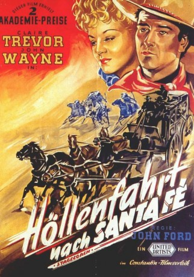
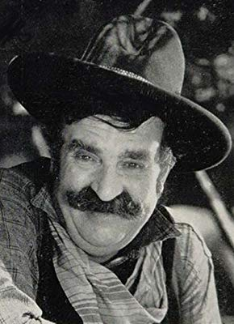

#2663 Höllenfahrt nach Santa Fé
Alternativ: Stagecoach
Auszeichnungen: 2 Oscars gewonnen für 5 Oscars nominiert
 
 IMDB-Wertung: 7.9 / 10
IMDB-Wertung: 7.9 / 10  Metascore: 0
Metascore: 0 
Bei einer Postkutschenfahrt durch gefährliches Indianergebiet zeigt die bunt zusammengewürfelte Gruppe Reisender ihre wahren Gesichter: eine Schwangere aus den Südstaaten, ein dubioser Glücksspieler, eine vertriebene Prostituierte, ein schüchterner Whiskey-Vertreter, ein pflichtgetreuer Sheriff, ein die eigene Bank ausraubender Direktor, ein geschwätziger Kutscher und der Outlaw Ringo, auf den in der Stadt noch ein Showdown wartet.
Jahr: 1939
Dauer: 95 Minuten
FSK: 12
Land: USA Studio: United ArtistsTonspuren:
Untertitel:
Auflösung: 1080p (1488x1080) Größe: 8140 MB
Genre: Abenteuer, Western
Regisseur: John Ford
Drehbuch: Ernest Haycox, Dudley Nichols, Ben Hecht
Soundtrack: Gerard Carbonara
Darsteller:
 Claire Trevor als Dallas
Claire Trevor als Dallas John Wayne als Ringo Kid
John Wayne als Ringo Kid Andy Devine als Buck
Andy Devine als Buck John Carradine als Hatfield
John Carradine als Hatfield Thomas Mitchell als Doc Josiah Boone
Thomas Mitchell als Doc Josiah Boone- George Bancroft als Marshal Curley Wilcox
- Donald Meek als Samuel Peacock
- Berton Churchill als Ellsworth Henry Gatewood
- Tim Holt als Lieutenant Blanchard
 Tom Tyler als Luke Plummer
Tom Tyler als Luke Plummer Chief John Big Tree als Indian Scout , uncredited
Chief John Big Tree als Indian Scout , uncredited Yakima Canutt als Cavalry Scout , uncredited
Yakima Canutt als Cavalry Scout , uncredited- Bill Cody als Rancher , uncredited
 Franklyn Farnum als Deputy Frank , uncredited
Franklyn Farnum als Deputy Frank , uncredited- William Hopper als Sergeant , uncredited
- Walter McGrail als Capt. Sickel , uncredited
 Woody Strode als Man in Saloon , uncredited
Woody Strode als Man in Saloon , uncredited- Bryant Washburn als Capt. Simmons , uncredited
 Hank Worden als Cavalryman Extra , uncredited
Hank Worden als Cavalryman Extra , uncredited- Louise Platt als Mrs. Lucy Mallory
- Frank Baker als (uncredited
- Ted Billings als Bit Part , uncredited
- Wiggie Blowne als Bit Part , uncredited
- Danny Borzage als (uncredited
- Ed Brady als Lordsburg Saloon Owner , uncredited
- Fritzi Brunette als Bit Part , uncredited
- Nora Cecil als Boone's Landlady , uncredited
- Steve Clemente als Bit , uncredited
-  Jack Curtis als Bartender , uncredited
- Marga Ann Deighton als Mrs. Pickett , uncredited
- Patricia Doyle als Bit Part , uncredited
 Tex Driscoll als Bit Part , uncredited
Tex Driscoll als Bit Part , uncredited- Johnny Eckert als Small Role , uncredited
 Francis Ford als Sgt. Billy Pickett , uncredited
Francis Ford als Sgt. Billy Pickett , uncredited- Brenda Fowler als Mrs. Gatewood , uncredited
 Helen Gibson als Girl in Saloon , uncredited
Helen Gibson als Girl in Saloon , uncredited- Robert Homans als Ed - Editor , uncredited
- Si Jenks als Bartender , uncredited
- Cornelius Keefe als Capt. Whitney , uncredited
- Florence Lake als Mrs. Nancy Whitney , uncredited
- Al Lee als Small Role , uncredited
- Duke R. Lee als Lordsburg Sheriff , uncredited
- Theodore Lorch als Lordsburg Express Agent , uncredited
 Chris-Pin Martin als Chris , uncredited
Chris-Pin Martin als Chris , uncredited- Jim Mason als Jim - Tonto Express Agent , uncredited
- Louis Mason als Tonto Sheriff , uncredited
- Merrill McCormick als Ogler , uncredited
- J.P. McGowan als (uncredited
- Paul McVey als Pony Express Agent , uncredited
- Jack Mohr als Small Role , uncredited
Datei: X:\HD-Western-Collections\John Wayne\Höllenfahrt nach Santa Fé (1939, FSK12, 1488x1080).mkv seit 30.11.2015
Festplatte: HD Eastern+Western
 Es gibt insgesamt 34 Filme in der Gruppe 'HD-Western-Collections\John Wayne'
Es gibt insgesamt 34 Filme in der Gruppe 'HD-Western-Collections\John Wayne'